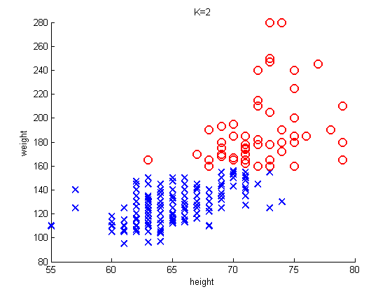
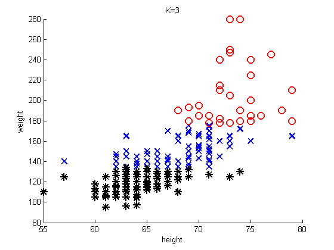

K-means clustering for Height Weight data
rawdata = dlmread('heightWeightDataSimple.txt'); % comma delimited file X = [rawdata(:,2) rawdata(:,3)]; % height, weight marker = {'bx', 'ro', 'k*'}; setSeed(1); Ks = [2 3]; for ki=1:length(Ks) K = Ks(ki); %Z = kmeans(X, K); [mu, Z] = kmeansFit(X, K); figure; for c=1:K ndx = Z==c; h=scatter(X(ndx, 1), X(ndx, 2), 100, marker{c}, 'linewidth', 2); hold on; end xlabel('height'); ylabel('weight') title(sprintf('K=%d', K)); printPmtkFigure(sprintf('heightWeightKmeans%d', K)) end 